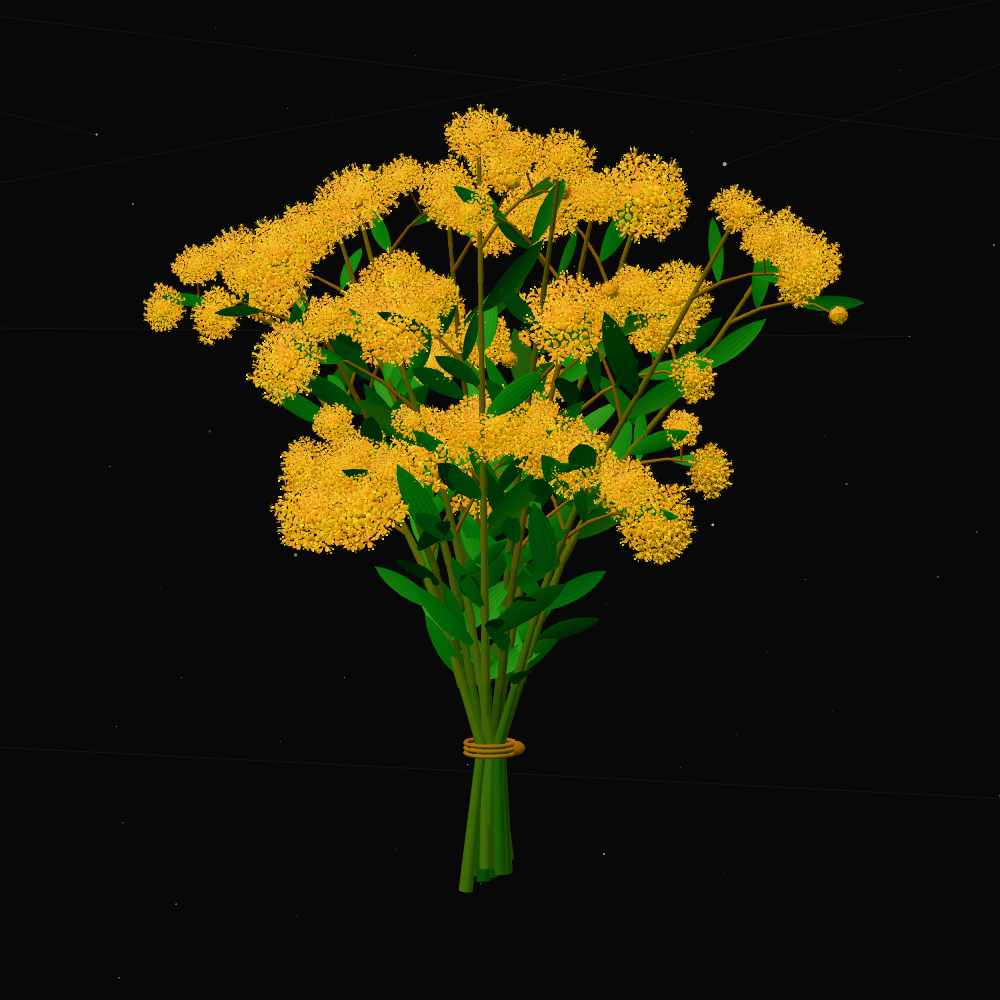

The 3D bouquet could not open.
A still bouquet is shown instead.
WATL
Technology design
Instruments for the not-yet.
WATL is a technology design practice represented here by a complete hand-tied bouquet of golden wattle suspended within a deep, slowly moving field of light and spatial signals. Curved green phyllodes surround dense, symmetrical yellow pom-pom heads built from mirrored layers of tightly packed five-part florets. Stars occupy several real depths, so turning the object also changes the surrounding space.
Use the arrow keys to rotate the bouquet, plus and minus to zoom, Enter to brighten the flowers, and Home to reset the view.
Drag to orbit, scroll or pinch to approach, and tap a flower to illuminate it.
Building the 3D bouquet.